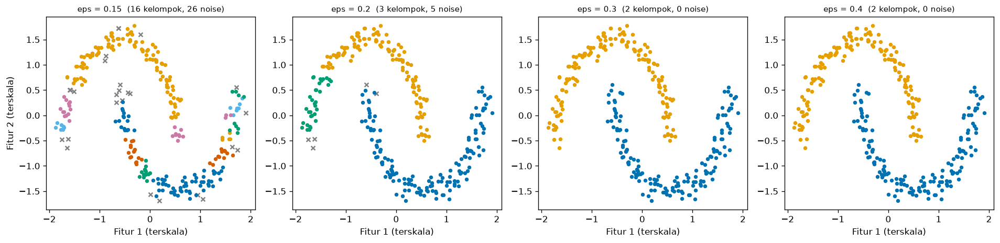
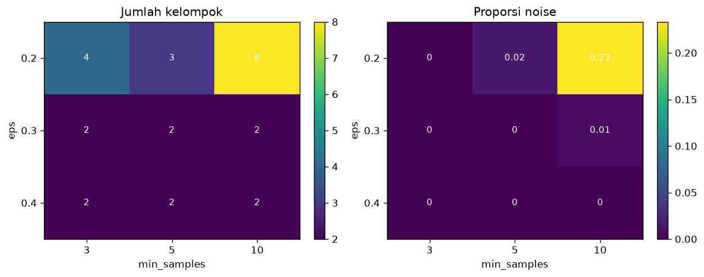

Bab 2 — Experimental Design and Configuration¶
Learning Objectives¶
Setelah mempelajari bab ini, kamu mampu:
- Membedakan desain eksperimen dari implementasi algoritma.
- Menentukan tujuan, dataset, variabel, algoritma, dan metrik untuk sebuah eksperimen.
- Menyusun konfigurasi baseline dan tabel konfigurasi eksperimen.
- Menerapkan prinsip "ubah satu variabel pada satu waktu" dan mengenali kapan itu tidak cukup.
- Menjalankan eksperimen multi-faktor sederhana dengan
ParameterGrid. - Mencatat pengaturan eksperimen (ID, data, praproses, parameter, seed, hasil, waktu, versi pustaka) ke CSV dan JSON.
- Memeriksa bahwa sebuah eksperimen bisa diulang.
- Membaca hasil desain eksperimen untuk K-Means, DBSCAN, dan Hierarchical Clustering.
Introduction¶
Bab 1 menunjukkan mengapa kita perlu eksperimen. Bab ini menunjukkan bagaimana merancangnya. Perbedaannya penting:
- Implementasi menjawab "bagaimana menjalankan algoritma ini?" (Level 4).
- Desain eksperimen menjawab "apa saja yang akan kujalankan, mengapa, dengan pengaturan apa, dan bagaimana mencatatnya?"
Desain yang baik dibuat sebelum kode dijalankan. Ia seperti resep yang ditulis lengkap dengan takaran, sehingga orang lain (atau dirimu sendiri nanti) bisa memasak ulang dengan hasil yang sama.
Fundamental Concepts¶
| Istilah | Arti |
|---|---|
| Experimental design | Rencana tertulis: apa yang diubah, apa yang ditahan, apa yang diukur |
| Configuration | Satu set lengkap pengaturan untuk satu kali jalan (algoritma, parameter, praproses, seed) |
| Baseline configuration | Konfigurasi pembanding |
| One-variable-at-a-time (OVAT) | Mengubah satu variabel pada satu waktu, yang lain tetap di nilai baseline |
| Factorial design | Menjalankan semua kombinasi nilai beberapa variabel |
| Experiment ID | Kode unik untuk satu kali jalan, misalnya DB-E3 |
| Dataset fingerprint | Sidik jari data (hash) untuk memastikan data yang dipakai identik |
| Experiment record | Satu baris catatan yang memuat konfigurasi dan hasil sebuah kali jalan |
Detailed Explanation¶
Langkah-langkah merancang eksperimen¶
1. Tentukan tujuan dan pertanyaan. Satu pertanyaan per eksperimen (Bab 1). Contoh: "Seberapa peka DBSCAN terhadap eps?"
2. Pilih dataset yang sesuai pertanyaan. Dataset dipilih karena ia membantu menjawab pertanyaan, bukan sekadar karena tersedia. Untuk menguji kemampuan menemukan bentuk melengkung, pilih make_moons. Untuk menguji K yang tepat, pilih gerombol bulat yang jumlahnya diketahui. Catat alasannya.
3. Tentukan variabel. Mana yang bebas (diubah), terikat (diukur), dan terkontrol (ditahan)?
4. Pilih algoritma. Berdasarkan pertanyaan dan karakter data. Jangan memasukkan semua algoritma kalau pertanyaannya hanya tentang satu algoritma.
5. Pilih metrik evaluasi. Dari Level 5: metrik internal (Silhouette, DBI, CHI) untuk menilai tanpa label, dan metrik eksternal (ARI) hanya bila ada label acuan, dan hanya sebagai penilaian setelah clustering, bukan untuk menyetel model. Pakai lebih dari satu metrik.
6. Tetapkan baseline. Konfigurasi yang masuk akal dan sederhana sebagai pembanding.
7. Tulis tabel konfigurasi. Semua kondisi yang akan dijalankan.
8. Tentukan cara mencatat. Apa saja yang disimpan, dan di mana.
Percobaan terkontrol: ubah satu variabel pada satu waktu¶
Misalkan kamu ingin tahu pengaruh eps dan min_samples pada DBSCAN. Cara paling bersih:
- Tetapkan baseline:
eps = 0,3,min_samples = 5. - Ubah hanya
eps(0,15; 0,2; 0,3; 0,4),min_samplestetap 5. - Ubah hanya
min_samples(3; 10; 20),epstetap 0,3.
Keuntungan: setiap perbedaan hasil jelas disebabkan oleh variabel yang berubah. Kelemahan: tidak melihat interaksi. Mungkin efek min_samples bergantung pada nilai eps. Untuk itu ada desain multi-faktor.
Desain multi-faktor (pengantar)¶
Pada desain factorial, kita menjalankan semua kombinasi dari beberapa variabel. Misalnya eps ∈ {0,2; 0,3; 0,4} dan min_samples ∈ {3, 5, 10} memberi \( 3 \times 3 = 9 \) kondisi. Hasilnya bisa disusun sebagai tabel silang. Jumlah kondisi tumbuh cepat: tiga variabel dengan lima nilai masing-masing sudah 125 kondisi. Maka desain multi-faktor dipakai dengan hemat. Bab 3 membahas cara mengeksplorasi ruang parameter yang besar.
Tabel konfigurasi¶
Tabel konfigurasi adalah daftar semua kondisi, dituliskan sebelum dijalankan:
| ID | Dataset | Praproses | Algoritma | Parameter | Seed | Peran |
|---|---|---|---|---|---|---|
| KM-02 | blobs | StandardScaler | K-Means | K = 3 | 42 | Baseline |
| KM-01 | blobs | StandardScaler | K-Means | K = 2 | 42 | Variasi K |
| KM-03 | blobs | StandardScaler | K-Means | K = 4 | 42 | Variasi K |
| ... | ... | ... | ... | ... | ... | ... |
Tabel ini sekaligus daftar tugas dan dokumentasi.
Apa yang dicatat¶
Setiap kali jalan sebaiknya mencatat: ID eksperimen, nama dan sidik jari dataset, praproses, fitur yang dipakai, algoritma, parameter, seed, metrik hasil, waktu jalan, dan versi pustaka. Dengan itu, orang lain bisa mengulang eksperimen, dan kamu bisa menelusuri kapan sebuah angka dihasilkan.
Format sederhana sudah cukup
Kita memakai CSV untuk tabel hasil dan JSON untuk konfigurasi serta info lingkungan. Keduanya bisa dibuka dengan editor teks atau Excel. Tidak perlu platform pelacakan eksperimen untuk memulai.
Prosedur yang bisa diulang¶
Sebuah prosedur disebut reproducible bila orang lain yang memakai data, kode, konfigurasi, seed, dan lingkungan yang sama mendapat hasil yang sama. Syaratnya: (1) semua pengaturan tertulis, (2) seed ditetapkan, (3) data diidentifikasi (sidik jari), (4) versi pustaka dicatat. Kita akan membuktikan keterulangan di kode dengan menjalankan ulang semua konfigurasi dan membandingkannya dengan catatan.
Contoh desain untuk tiga algoritma¶
| Algoritma | Pertanyaan | Dataset | Variabel bebas | Terkontrol |
|---|---|---|---|---|
| K-Means | Seberapa peka hasil terhadap K? | Blobs (3 gerombol) | K = 2, 3, 4, 5 | Praproses, n_init, seed |
| DBSCAN | Seberapa peka terhadap eps dan min_samples? |
Moons | eps, min_samples |
Praproses, metrik jarak |
| Hierarchical | Apakah linkage mengubah bentuk yang ditemukan? |
Moons | linkage |
Praproses, n_clusters = 2 |
Kesalahan umum¶
- Menulis desain sesudah melihat hasil.
- Mengubah banyak variabel tanpa rencana, sehingga penyebab perbedaan tidak jelas.
- Tidak menetapkan baseline.
- Tidak mencatat seed dan versi pustaka.
- Memakai label acuan untuk memilih konfigurasi (kebocoran informasi). Label hanya untuk menilai.
- Terlalu banyak kondisi tanpa pertanyaan yang jelas, lalu memilih yang paling bagus saja.
- Mencampur data praproses berbeda antar kondisi tanpa mencatatnya.
Experimental Procedure¶
Tiga desain yang kita jalankan, dengan dataset dan praproses sama (StandardScaler) dan seed 42:
- Desain 1 (K-Means): dataset blobs, variabel bebas K ∈ {2, 3, 4, 5}, baseline K = 3.
- Desain 2 (DBSCAN): dataset moons, OVAT. Pertama
eps∈ {0,15; 0,2; 0,3; 0,4} denganmin_samples = 5. Keduamin_samples∈ {3, 10, 20} denganeps = 0,3. Baselineeps = 0,3,min_samples = 5. - Desain 3 (Hierarchical): dataset moons, variabel bebas
linkage∈ {ward, complete, average, single},n_clusters = 2, baseline ward. - Pengantar multi-faktor: DBSCAN pada moons,
eps×min_samples= 3 × 3. - Pencatatan: simpan semua catatan ke CSV, konfigurasi dan lingkungan ke JSON.
- Pemeriksaan keterulangan: jalankan ulang dan bandingkan dengan catatan.
Python Implementation¶
Skrip lengkapnya ada di examples/level-6/02_experimental_design_and_configuration.py, dan notebook-nya di notebooks/level-6/02-experimental-design-and-configuration.ipynb. Alat pencatat ada di examples/level-6/_experiment.py. Setiap potongan kode diikuti penjelasannya.
Konteks masalah: merancang dan menjalankan tiga desain eksperimen yang tercatat dan bisa diulang.
Tujuan eksperimen: melihat kepekaan hasil terhadap satu variabel (K, eps, min_samples, linkage) pada satu waktu, lalu terhadap dua variabel sekaligus.
Dataset: make_blobs (3 gerombol bulat, untuk uji K) dan make_moons (dua bulan sabit, untuk uji DBSCAN dan linkage). Keduanya sintetis dan punya label acuan. Dipilih karena bentuk kelompoknya diketahui, sehingga hasil bisa dinilai setelahnya.
Pustaka: NumPy, pandas, Matplotlib, scikit-learn.
Bagian A — Alat bantu pencatat¶
import hashlib
import json
import platform
import time
from importlib import metadata
from pathlib import Path
import numpy as np
import pandas as pd
from sklearn.metrics import calinski_harabasz_score, davies_bouldin_score, silhouette_score
RESULTS_DIR = Path(__file__).resolve().parent / "results"
def dataset_fingerprint(X):
"""Sidik jari data: 12 karakter pertama dari hash SHA-256 isi array. Data berbeda, sidik jari berbeda."""
return hashlib.sha256(np.ascontiguousarray(X).tobytes()).hexdigest()[:12]
def environment_info():
"""Versi Python dan pustaka yang dipakai, supaya hasil bisa diulang di lingkungan yang sama."""
info = {"python": platform.python_version(), "os": platform.system()}
for package in ("numpy", "pandas", "scikit-learn", "scipy", "matplotlib"):
info[package] = metadata.version(package)
return info
def timed(function, *args, **kwargs):
"""Menjalankan function dan mengembalikan (hasil, waktu_detik)."""
start = time.perf_counter()
result = function(*args, **kwargs)
return result, time.perf_counter() - start
def internal_scores(X, labels):
"""Ringkasan hasil clustering. Noise (label -1) dikeluarkan sebelum menghitung metrik internal.
Mengembalikan jumlah kelompok, proporsi noise, dan tiga metrik internal Level 5.
Bila kurang dari dua kelompok tersisa, ketiga metrik bernilai NaN.
"""
labels = np.asarray(labels)
mask = labels != -1
n_clusters = len(set(labels[mask].tolist()))
result = {
"n_clusters": n_clusters,
"noise_fraction": float(1 - mask.mean()),
"silhouette": np.nan,
"davies_bouldin": np.nan,
"calinski_harabasz": np.nan,
}
if n_clusters >= 2 and mask.sum() > n_clusters:
result["silhouette"] = silhouette_score(X[mask], labels[mask])
result["davies_bouldin"] = davies_bouldin_score(X[mask], labels[mask])
result["calinski_harabasz"] = calinski_harabasz_score(X[mask], labels[mask])
return result
def make_record(experiment_id, dataset, X, preprocessing, features, algorithm, params, seed, scores, runtime):
"""Satu baris catatan eksperimen. `params` disimpan sebagai teks JSON."""
return {
"experiment_id": experiment_id,
"dataset": dataset,
"dataset_fingerprint": dataset_fingerprint(X),
"preprocessing": preprocessing,
"features": features,
"algorithm": algorithm,
"params": json.dumps(params, sort_keys=True),
"seed": seed,
**scores,
"runtime_seconds": runtime,
}
def save_records(records, name):
"""Menyimpan daftar catatan ke results/<name>.csv dan mengembalikan DataFrame-nya."""
RESULTS_DIR.mkdir(exist_ok=True)
table = pd.DataFrame(records)
table.to_csv(RESULTS_DIR / f"{name}.csv", index=False)
return table
def save_json(obj, name):
"""Menyimpan objek (misalnya konfigurasi atau info lingkungan) ke results/<name>.json."""
RESULTS_DIR.mkdir(exist_ok=True)
with open(RESULTS_DIR / f"{name}.json", "w", encoding="utf-8") as handle:
json.dump(obj, handle, indent=2, ensure_ascii=False, default=str)
Penjelasan:
dataset_fingerprint(X):np.ascontiguousarray(X).tobytes()mengubah array menjadi deretan byte.hashlib.sha256(...).hexdigest()[:12]menghitung hash dan mengambil 12 karakter pertama. Jika satu angka saja pada data berubah, sidik jarinya berubah.environment_info():platform.python_version()memberi versi Python.metadata.version(package)membaca versi pustaka yang terpasang.timed(function, ...):time.perf_counter()mencatat waktu sebelum dan sesudah. Fungsi mengembalikan hasil dan selisih waktu (detik).internal_scores(X, labels): mengeluarkan noise (labels != -1), menghitung jumlah kelompok, proporsi noise, dan tiga metrik internal. Jika kurang dari dua kelompok tersisa, hasilnyaNaN(Level 5, Bab 5).make_record(...): menyusun satu baris catatan.json.dumps(params, sort_keys=True)menyimpan parameter sebagai teks JSON dengan urutan kunci tetap.save_recordsmenyimpan daftar catatan ke CSV (to_csv).save_jsonmenyimpan objek ke JSON. Folderresults/dibuat otomatis.
Bagian B — Siapkan alat dan data¶
import json
import numpy as np
import pandas as pd
import matplotlib.pyplot as plt
from sklearn.cluster import DBSCAN, AgglomerativeClustering, KMeans
from sklearn.datasets import make_blobs, make_moons
from sklearn.metrics import adjusted_rand_score
from sklearn.model_selection import ParameterGrid
from sklearn.preprocessing import StandardScaler
import _experiment as ex # alat bantu pencatat (examples/level-6/_experiment.py)
SEED = 42
X_blobs_raw, y_blobs = make_blobs(n_samples=300, centers=3, cluster_std=1.2, random_state=SEED)
X_moons_raw, y_moons = make_moons(n_samples=300, noise=0.06, random_state=SEED)
# Praproses yang sama untuk semua eksperimen: StandardScaler
X_blobs = StandardScaler().fit_transform(X_blobs_raw)
X_moons = StandardScaler().fit_transform(X_moons_raw)
print("Blobs : bentuk", X_blobs.shape, "sidik jari data", ex.dataset_fingerprint(X_blobs))
print("Moons : bentuk", X_moons.shape, "sidik jari data", ex.dataset_fingerprint(X_moons))
Penjelasan:
import _experiment as exmemuat alat pencatat dengan nama singkatex.ParameterGriddari scikit-learn membuat semua kombinasi parameter. Kita memakainya untuk desain multi-faktor.SEED = 42satu seed untuk semuanya.make_blobs(...)danmake_moons(...)mengembalikan data dan label acuan.StandardScaler().fit_transform(...)menyamakan skala. Perlakuan yang sama untuk semua eksperimen adalah variabel terkontrol.- Sidik jari data dicetak. Jika orang lain mendapat sidik jari yang sama, datanya identik.
Bagian C — Satu fungsi untuk satu konfigurasi¶
def build_estimator(algorithm, params, seed):
"""Membuat estimator dari nama algoritma dan dictionary parameter."""
if algorithm == "KMeans":
return KMeans(n_init=10, random_state=seed, **params)
if algorithm == "DBSCAN":
return DBSCAN(**params)
if algorithm == "Hierarchical":
return AgglomerativeClustering(**params)
raise ValueError(f"Algoritma tidak dikenal: {algorithm}")
def run_config(exp_id, dataset, X, y_ref, algorithm, params, seed=SEED):
"""Menjalankan satu konfigurasi dan mengembalikan satu catatan lengkap."""
estimator = build_estimator(algorithm, params, seed)
labels, seconds = ex.timed(estimator.fit_predict, X) # pelatihan: hanya X
scores = ex.internal_scores(X, labels) # metrik internal
scores["ari_reference"] = adjusted_rand_score(y_ref, labels) # label acuan: hanya untuk menilai
return ex.make_record(exp_id, dataset, X, "StandardScaler", "semua fitur", algorithm, params, seed, scores, seconds)
columns = ["experiment_id", "n_clusters", "noise_fraction", "silhouette", "davies_bouldin", "ari_reference"]
Penjelasan baris demi baris:
build_estimator(algorithm, params, seed)membuat model dari nama algoritma.**paramsmembongkar dictionary menjadi argumen:{"n_clusters": 3}menjadin_clusters=3.n_init=10danrandom_state=seedadalah variabel terkontrol untuk K-Means.run_config(...)adalah satu-satunya jalur menjalankan eksperimen. Memakai satu fungsi untuk semua kondisi menjamin perlakuan yang sama.estimator.fit_predict(X)adalah pelatihan: hanyaXyang masuk.ex.timedmengukur waktunya.ex.internal_scores(X, labels)menghitung metrik internal.adjusted_rand_score(y_ref, labels)memakai label acuan hanya untuk menilai, setelah clustering selesai.ex.make_record(...)merangkum semuanya menjadi satu catatan.columnsadalah kolom yang akan kita tampilkan (tanpa waktu jalan, karena waktu berubah tiap eksekusi).
Bagian D — Desain 1: K-Means¶
# Desain 1: K-Means pada blobs. Variabel bebas: K. Baseline: K = 3. Lainnya ditahan sama.
records = []
for i, k in enumerate([2, 3, 4, 5], start=1):
records.append(run_config(f"KM-{i:02d}", "blobs", X_blobs, y_blobs, "KMeans", {"n_clusters": k}))
kmeans_table = pd.DataFrame(records)
print(kmeans_table[["experiment_id", "params"] + columns[1:]].round(3).to_string(index=False))
Penjelasan: enumerate(..., start=1) memberi nomor urut untuk ID (KM-01, KM-02, ...). f"KM-{i:02d}" memformat nomor menjadi dua digit. Hanya n_clusters yang berubah. pd.DataFrame(records) mengubah daftar catatan menjadi tabel.
Bagian E — Desain 2: DBSCAN (OVAT)¶
# Desain 2: DBSCAN pada moons, satu variabel per kali. Baseline: eps = 0.3, min_samples = 5.
dbscan_records = []
for i, eps in enumerate([0.15, 0.2, 0.3, 0.4], start=1): # variabel bebas 1: eps
dbscan_records.append(run_config(f"DB-E{i}", "moons", X_moons, y_moons, "DBSCAN", {"eps": eps, "min_samples": 5}))
for i, min_samples in enumerate([3, 10, 20], start=1): # variabel bebas 2: min_samples (eps tetap 0.3)
dbscan_records.append(run_config(f"DB-M{i}", "moons", X_moons, y_moons, "DBSCAN", {"eps": 0.3, "min_samples": min_samples}))
dbscan_table = pd.DataFrame(dbscan_records)
print(dbscan_table[["experiment_id", "params"] + columns[1:]].round(3).to_string(index=False))
Penjelasan: dua perulangan terpisah. Pada yang pertama, min_samples selalu 5 dan hanya eps yang berganti. Pada yang kedua, eps selalu 0,3 dan hanya min_samples yang berganti. Itulah one-variable-at-a-time.
Bagian F — Desain 3: Hierarchical¶
# Desain 3: Hierarchical pada moons. Variabel bebas: linkage. Baseline: ward. n_clusters = 2 tetap.
hier_records = []
for i, linkage in enumerate(["ward", "complete", "average", "single"], start=1):
hier_records.append(run_config(f"HC-{i:02d}", "moons", X_moons, y_moons, "Hierarchical", {"n_clusters": 2, "linkage": linkage}))
hier_table = pd.DataFrame(hier_records)
print(hier_table[["experiment_id", "params"] + columns[1:]].round(3).to_string(index=False))
Penjelasan: n_clusters=2 tetap, hanya linkage yang berubah (cara mengukur jarak antar kelompok, Level 4 Bab 3).
Bagian G — Pengantar multi-faktor¶
# Pengantar multi-faktor: dua variabel diubah bersama, semua kombinasinya dijalankan
grid = ParameterGrid({"eps": [0.2, 0.3, 0.4], "min_samples": [3, 5, 10]})
factorial_records = []
for i, params in enumerate(grid, start=1):
factorial_records.append(run_config(f"DB-F{i:02d}", "moons", X_moons, y_moons, "DBSCAN", params))
factorial_table = pd.DataFrame(factorial_records)
# Kolom params berisi teks JSON. Kita urai supaya eps dan min_samples bisa dijadikan tabel silang
factorial_table["eps"] = [json.loads(text)["eps"] for text in factorial_table["params"]]
factorial_table["min_samples"] = [json.loads(text)["min_samples"] for text in factorial_table["params"]]
print("Jumlah kelompok (baris = eps, kolom = min_samples):")
print(factorial_table.pivot(index="eps", columns="min_samples", values="n_clusters").to_string())
print("Proporsi noise:")
print(factorial_table.pivot(index="eps", columns="min_samples", values="noise_fraction").round(3).to_string())
print("ARI terhadap label acuan (dinilai SETELAH clustering):")
print(factorial_table.pivot(index="eps", columns="min_samples", values="ari_reference").round(3).to_string())
Penjelasan:
ParameterGrid({"eps": [...], "min_samples": [...]})menghasilkan semua kombinasi (3 × 3 = 9 dictionary).json.loads(text)mengurai teks JSON dari kolomparamsmenjadi dictionary, sehingga kita bisa mengambilepsdanmin_samplessebagai kolom terpisah..pivot(index="eps", columns="min_samples", values=...)membuat tabel silang: baris untuk satu variabel, kolom untuk variabel lain, sel berisi hasil.
Bagian H — Menyimpan catatan¶
all_records = records + dbscan_records + hier_records + factorial_records
results = ex.save_records(all_records, "02_experiments")
ex.save_json(ex.environment_info(), "02_environment")
ex.save_json(
{
"seed": SEED,
"datasets": {"blobs": "make_blobs(n_samples=300, centers=3, cluster_std=1.2)", "moons": "make_moons(n_samples=300, noise=0.06)"},
"preprocessing": "StandardScaler",
"designs": {"KM": "ubah n_clusters", "DB-E": "ubah eps", "DB-M": "ubah min_samples", "HC": "ubah linkage", "DB-F": "grid eps x min_samples"},
},
"02_config",
)
print("Jumlah catatan eksperimen :", len(results))
print("Kolom catatan :", list(results.columns))
print("Info lingkungan :", ex.environment_info())
Penjelasan: semua catatan digabung (records + dbscan_records + ...) dan disimpan ke results/02_experiments.csv. Konfigurasi umum dan info lingkungan disimpan sebagai JSON. File-file ini bisa dibuka kembali, dibagikan, atau dipakai lagi di Bab 10.
Bagian I — Memeriksa keterulangan¶
# Jalankan ulang semua konfigurasi, lalu bandingkan dengan catatan tersimpan (waktu jalan tidak dibandingkan)
rerun = []
for rec in all_records:
params = json.loads(rec["params"])
dataset = X_blobs if rec["dataset"] == "blobs" else X_moons
y_ref = y_blobs if rec["dataset"] == "blobs" else y_moons
rerun.append(run_config(rec["experiment_id"], rec["dataset"], dataset, y_ref, rec["algorithm"], params, rec["seed"]))
rerun_table = pd.DataFrame(rerun).drop(columns="runtime_seconds")
saved_table = pd.read_csv(ex.RESULTS_DIR / "02_experiments.csv").drop(columns="runtime_seconds")
same = np.allclose(rerun_table[["n_clusters", "noise_fraction", "silhouette", "ari_reference"]].fillna(-9).to_numpy(float),
saved_table[["n_clusters", "noise_fraction", "silhouette", "ari_reference"]].fillna(-9).to_numpy(float))
print("Semua hasil identik dengan catatan tersimpan (tanpa waktu jalan):", bool(same))
Penjelasan: setiap catatan dijalankan ulang dari konfigurasi tersimpannya. json.loads(rec["params"]) mengembalikan parameter, dan rec["seed"] mengembalikan seed. Hasil baru dibandingkan dengan CSV yang disimpan (np.allclose) tanpa kolom waktu jalan, yang memang berbeda tiap eksekusi. .fillna(-9) mengganti NaN supaya bisa dibandingkan.
Bagian J — Menggambar¶
palette = ["#0072B2", "#E69F00", "#009E73", "#CC79A7", "#D55E00", "#56B4E9"]
fig, axes = plt.subplots(1, 4, figsize=(16, 4))
for ax, eps in zip(axes, [0.15, 0.2, 0.3, 0.4]):
labels = DBSCAN(eps=eps, min_samples=5).fit_predict(X_moons)
for c in sorted(set(labels)):
if c == -1:
ax.scatter(X_moons[labels == c, 0], X_moons[labels == c, 1], s=22, marker="x", color="gray")
else:
ax.scatter(X_moons[labels == c, 0], X_moons[labels == c, 1], s=12, color=palette[c % len(palette)])
ax.set_title(f"eps = {eps} ({len(set(labels) - {-1})} kelompok, {int((labels == -1).sum())} noise)", fontsize=9)
ax.set_xlabel("Fitur 1 (terskala)")
axes[0].set_ylabel("Fitur 2 (terskala)")
plt.tight_layout()
plt.show()
fig, axes = plt.subplots(1, 2, figsize=(10, 4))
for ax, (column, title) in zip(axes, [("n_clusters", "Jumlah kelompok"), ("noise_fraction", "Proporsi noise")]):
pivot = factorial_table.pivot(index="eps", columns="min_samples", values=column)
image = ax.imshow(pivot.to_numpy(float), cmap="viridis", aspect="auto")
ax.set_xticks(range(len(pivot.columns)))
ax.set_xticklabels(pivot.columns)
ax.set_yticks(range(len(pivot.index)))
ax.set_yticklabels(pivot.index)
for r in range(pivot.shape[0]):
for c in range(pivot.shape[1]):
ax.text(c, r, f"{pivot.to_numpy(float)[r, c]:.2f}".rstrip("0").rstrip("."), ha="center", va="center", color="white", fontsize=9)
ax.set_xlabel("min_samples")
ax.set_ylabel("eps")
ax.set_title(title)
fig.colorbar(image, ax=ax, fraction=0.046)
plt.tight_layout()
plt.show()
Penjelasan: gambar pertama menampilkan DBSCAN pada empat nilai eps, titik noise berwarna abu-abu bertanda x. Gambar kedua adalah dua peta panas (heatmap) hasil desain multi-faktor: jumlah kelompok dan proporsi noise. imshow menggambar tabel sebagai warna, dan ax.text menulis angka di tiap sel.
Code Explanation¶
| Bagian kode | Peran |
|---|---|
run_config(...) |
Satu jalur tunggal untuk semua kondisi, menjamin perlakuan sama |
ex.make_record(...) |
Mencatat konfigurasi dan hasil dalam satu baris |
ParameterGrid |
Membuat semua kombinasi untuk desain multi-faktor |
.pivot(...) |
Tabel silang antara dua variabel |
ex.dataset_fingerprint(X) |
Memastikan data identik |
np.allclose(rerun, saved) |
Membuktikan hasil bisa diulang |
Desain vs implementasi
KMeans, DBSCAN, dan AgglomerativeClustering hanyalah alat yang sudah kamu kenal dari Level 4. Bab ini tidak mengajarkan cara kerjanya. Yang baru adalah rencana (kondisi apa saja, apa yang ditahan, apa yang dicatat).
How to Run¶
Dari folder utama proyek (setelah mengaktifkan lingkungan virtual):
pip install -r requirements-notebooks.txt
python examples/level-6/02_experimental_design_and_configuration.py
Skrip mencetak output ke terminal, menyimpan dua gambar ke docs/assets/level-6/, dan menyimpan hasil ke examples/level-6/results/. Notebook interaktifnya:
Output di bawah berasal dari eksekusi nyata dengan Python 3.14, NumPy 2.5.4, pandas 3.1.1, scikit-learn 1.9.1, dan Matplotlib 3.11.2.
Expected Output¶
Blobs : bentuk (300, 2) sidik jari data c54d03c906b4
Moons : bentuk (300, 2) sidik jari data 1509e053e513
experiment_id params n_clusters noise_fraction silhouette davies_bouldin ari_reference
KM-01 {"n_clusters": 2} 2 0.0 0.671 0.489 0.570
KM-02 {"n_clusters": 3} 3 0.0 0.818 0.252 1.000
KM-03 {"n_clusters": 4} 4 0.0 0.658 0.654 0.870
KM-04 {"n_clusters": 5} 5 0.0 0.508 0.846 0.732
experiment_id params n_clusters noise_fraction silhouette davies_bouldin ari_reference
DB-E1 {"eps": 0.15, "min_samples": 5} 16 0.087 0.264 0.634 0.299
DB-E2 {"eps": 0.2, "min_samples": 5} 3 0.017 0.355 0.866 0.799
DB-E3 {"eps": 0.3, "min_samples": 5} 2 0.000 0.384 1.022 1.000
DB-E4 {"eps": 0.4, "min_samples": 5} 2 0.000 0.384 1.022 1.000
DB-M1 {"eps": 0.3, "min_samples": 3} 2 0.000 0.384 1.022 1.000
DB-M2 {"eps": 0.3, "min_samples": 10} 2 0.007 0.391 1.007 0.987
DB-M3 {"eps": 0.3, "min_samples": 20} 3 0.497 0.617 0.508 0.196
experiment_id params n_clusters noise_fraction silhouette davies_bouldin ari_reference
HC-01 {"linkage": "ward", "n_clusters": 2} 2 0.0 0.425 0.845 0.425
HC-02 {"linkage": "complete", "n_clusters": 2} 2 0.0 0.482 0.823 0.607
HC-03 {"linkage": "average", "n_clusters": 2} 2 0.0 0.454 0.841 0.576
HC-04 {"linkage": "single", "n_clusters": 2} 2 0.0 0.384 1.022 1.000
Jumlah kelompok (baris = eps, kolom = min_samples):
min_samples 3 5 10
eps
0.2 4 3 8
0.3 2 2 2
0.4 2 2 2
Proporsi noise:
min_samples 3 5 10
eps
0.2 0.0 0.017 0.233
0.3 0.0 0.000 0.007
0.4 0.0 0.000 0.000
ARI terhadap label acuan (dinilai SETELAH clustering):
min_samples 3 5 10
eps
0.2 0.812 0.799 0.271
0.3 1.000 1.000 0.987
0.4 1.000 1.000 1.000
Jumlah catatan eksperimen : 24
Kolom catatan : ['experiment_id', 'dataset', 'dataset_fingerprint', 'preprocessing', 'features', 'algorithm', 'params', 'seed', 'n_clusters', 'noise_fraction', 'silhouette', 'davies_bouldin', 'calinski_harabasz', 'ari_reference', 'runtime_seconds']
Info lingkungan : {'python': '3.14.7', 'os': 'Windows', 'numpy': '2.5.4', 'pandas': '3.1.1', 'scikit-learn': '1.9.1', 'scipy': '1.18.1', 'matplotlib': '3.11.2'}
Semua hasil identik dengan catatan tersimpan (tanpa waktu jalan): True
[gambar disimpan: docs/assets/level-6/02-dbscan-eps.png]
[gambar disimpan: docs/assets/level-6/02-faktorial-dbscan.png]
Gambar yang dihasilkan:


Interpretasi output¶
1. Sidik jari data. Blobs c54d03c906b4, Moons 1509e053e513. Jika kamu menjalankan dengan pustaka dan seed yang sama dan mendapat sidik jari lain, datamu berbeda.
2. Desain 1: K-Means pada blobs (baseline K = 3).
| ID | K | Silhouette | Davies-Bouldin | ARI acuan |
|---|---|---|---|---|
| KM-01 | 2 | 0,671 | 0,489 | 0,570 |
| KM-02 (baseline) | 3 | 0,818 | 0,252 | 1,000 |
| KM-03 | 4 | 0,658 | 0,654 | 0,870 |
| KM-04 | 5 | 0,508 | 0,846 | 0,732 |
K = 3 terbaik menurut kedua metrik internal, dan ARI terhadap label acuan 1,000. Menyimpang dari K = 3 pada kedua arah menurunkan semuanya. Metrik internal (yang tidak melihat label) dan ARI (yang melihat label) sepakat di sini karena gerombolnya bulat dan jelas.
3. Desain 2: DBSCAN pada moons (baseline eps = 0,3, min_samples = 5).
| ID | eps |
min_samples |
Kelompok | Noise | Silhouette | ARI acuan |
|---|---|---|---|---|---|---|
| DB-E1 | 0,15 | 5 | 16 | 8,7% | 0,264 | 0,299 |
| DB-E2 | 0,2 | 5 | 3 | 1,7% | 0,355 | 0,799 |
| DB-E3 (baseline) | 0,3 | 5 | 2 | 0,0% | 0,384 | 1,000 |
| DB-E4 | 0,4 | 5 | 2 | 0,0% | 0,384 | 1,000 |
| DB-M1 | 0,3 | 3 | 2 | 0,0% | 0,384 | 1,000 |
| DB-M2 | 0,3 | 10 | 2 | 0,7% | 0,391 | 0,987 |
| DB-M3 | 0,3 | 20 | 3 | 49,7% | 0,617 | 0,196 |
Hal yang dapat dibaca:
epsterlalu kecil (0,15) memecah bulan menjadi 16 kelompok. Di antara 0,2 dan 0,3 hasil berubah drastis (3 kelompok menjadi 2). Antara 0,3 dan 0,4 tidak ada perubahan: kita berada di "dataran" yang stabil.- Pada DB-M3 (
min_samples = 20), hampir separuh data (49,7%) dianggap noise. Silhouette dan DBI-nya (0,508) tampak terbaik dari semua kondisi, tetapi hanya karena setengah data dikeluarkan sebelum dihitung. ARI-nya anjlok menjadi 0,196. Inilah contoh awal bahaya mengoptimalkan satu metrik. Bab 3 membahasnya lebih jauh.
4. Desain 3: Hierarchical pada moons (baseline ward).
| ID | linkage |
Silhouette | Davies-Bouldin | ARI acuan |
|---|---|---|---|---|
| HC-01 (baseline) | ward | 0,425 | 0,845 | 0,425 |
| HC-02 | complete | 0,482 | 0,823 | 0,607 |
| HC-03 | average | 0,454 | 0,841 | 0,576 |
| HC-04 | single | 0,384 | 1,022 | 1,000 |
single linkage mengenali dua bulan dengan sempurna (ARI 1,000), tetapi mendapat metrik internal terburuk. Ini mengulang pelajaran Level 5: metrik internal menyukai kelompok bulat. Desain yang baik membaca beberapa metrik dan melihat gambar.
5. Multi-faktor. Jumlah kelompok (baris eps, kolom min_samples):
eps \ min_samples |
3 | 5 | 10 |
|---|---|---|---|
| 0,2 | 4 | 3 | 8 |
| 0,3 | 2 | 2 | 2 |
| 0,4 | 2 | 2 | 2 |
Proporsi noise: pada eps = 0,2: 0,0; 0,017; 0,233. Pada eps = 0,3: 0,0; 0,0; 0,007. Pada eps = 0,4: 0,0 semuanya. ARI acuan: eps = 0,2: 0,812; 0,799; 0,271. Pada eps 0,3 dan 0,4: sekitar 1,0 (0,987 untuk 0,3 dengan min_samples = 10).
Interaksi terlihat: efek min_samples = 10 bergantung pada eps. Pada eps = 0,2, min_samples = 10 menghasilkan 8 kelompok dan 23,3% noise. Pada eps = 0,3, min_samples = 10 hanya 0,7% noise. Desain OVAT (satu variabel per kali) tidak akan menampakkan ini sepenuhnya. Itulah gunanya desain multi-faktor.
6. Pencatatan. 24 catatan tersimpan (4 + 7 + 4 + 9). Kolomnya: experiment_id, dataset, dataset_fingerprint, preprocessing, features, algorithm, params, seed, n_clusters, noise_fraction, silhouette, davies_bouldin, calinski_harabasz, ari_reference, runtime_seconds. Lingkungan tercatat: Python 3.14.7, Windows, NumPy 2.5.4, pandas 3.1.1, scikit-learn 1.9.1, SciPy 1.18.1, Matplotlib 3.11.2.
7. Keterulangan. Semua 24 konfigurasi dijalankan ulang dan identik dengan catatan tersimpan (True), tidak termasuk waktu jalan. Pada eksperimen ini, hasil bisa diulang di lingkungan yang sama.
Batas kesimpulan
Kesimpulan di atas berlaku untuk dua dataset sintetis kecil dengan satu seed. eps yang cocok pada data terskala ini belum tentu cocok pada data lain. Kita juga belum menguji kestabilan terhadap seed atau sampel (Bab 9).
Practical Application¶
Laporan perbandingan konfigurasi. Tim analisis menyimpan tabel results/*.csv bersama kode. Saat atasan bertanya, "Mengapa kalian memilih eps ini?", tabel itu menjawabnya.
Audit dan peninjauan sejawat. Sidik jari data, seed, dan versi pustaka memudahkan orang lain mengulang analisis.
Menghindari "kebetulan terbaik". Karena semua kondisi tercatat, kamu bisa melaporkan seluruh hasil, bukan hanya yang paling bagus.
Menyusun anggaran komputasi. Tabel konfigurasi menunjukkan berapa kondisi yang akan dijalankan sebelum memulai.
Hands-on Exercises¶
- Tambahkan konfigurasi DBSCAN
eps = 0,25,min_samples = 5pada moons. Berapa kelompok, proporsi noise, dan ARI-nya? - Jalankan Hierarchical dengan
n_clusters = 3danlinkage = singlesertawardpada blobs. Berapa ARI dan ukuran kelompoksingle? - Buat blobs dengan
random_state=7(bukan 42), standarkan, dan hitung sidik jarinya. Apa bedanya dengan sidik jari blobs asli? - Dari tabel multi-faktor, jelaskan mengapa desain OVAT dengan baseline
eps = 0,3tidak akan menunjukkan bahwamin_samples = 10bisa berbahaya. - Mengapa DB-M3 tidak boleh dianggap konfigurasi terbaik walau Silhouette-nya tertinggi?
- Tulis tabel konfigurasi (ID, dataset, praproses, algoritma, parameter, seed, peran) untuk desain K-Means K = 2 sampai 5.
Jawaban
Hasil nomor 1 sampai 3 berasal dari eksekusi nyata.
- 2 kelompok, 0,0% noise, ARI 1,000. Konsisten dengan dataran stabil antara 0,3 dan 0,4.
single: ARI 1,000 dan ukuran kelompok 100, 100, 100.wardjuga 1,000. Pada gerombol bulat dan terpisah, kedua linkage menemukan struktur yang sama. Perbedaan linkage baru terlihat pada bentuk non-bulat seperti moons.- Sidik jari blobs dengan
random_state=7:8512bce8428b, berbeda daric54d03c906b4. Data berbeda menghasilkan sidik jari berbeda. - Pada OVAT dengan baseline
eps = 0,3,min_samples = 10hanya menghasilkan 0,7% noise dan ARI 0,987 sehingga tampak aman. Baru padaeps = 0,2terlihat bahwamin_samples = 10memberi 23,3% noise dan ARI 0,271. Efekmin_samplesbergantung padaeps(interaksi). - Karena 49,7% data dikeluarkan sebagai noise sebelum Silhouette dihitung, dan ARI-nya hanya 0,196. Silhouette tinggi di sini adalah akibat membuang data sulit.
- Contoh:
KM-01 | blobs | StandardScaler | K-Means | K=2 | 42 | variasi K;KM-02 | ... | K=3 | 42 | baseline;KM-03 | ... | K=4 | ...;KM-04 | ... | K=5 | ....
Troubleshooting¶
Masalah teknis¶
| Masalah | Penyebab | Solusi |
|---|---|---|
ModuleNotFoundError: _experiment |
Skrip dijalankan dari tempat yang salah, sehingga folder examples/level-6 tidak masuk sys.path |
Jalankan skrip dari folder utama proyek, atau pastikan _experiment.py satu folder dengan skrip |
| Sidik jari data berbeda dari bab | Versi NumPy atau scikit-learn berbeda, atau seed berbeda | Samakan versi dan seed |
Hasil keterulangan False |
Ada langkah acak tanpa seed, atau data berubah | Tetapkan semua random_state, periksa sidik jari |
KeyError saat pivot |
Kolom eps atau min_samples belum dibuat |
Urai kolom params dengan json.loads terlebih dulu |
| Waktu jalan berbeda tiap eksekusi | Waktu memang tidak deterministik | Jangan masukkan waktu ke pemeriksaan keterulangan |
Nilai NaN pada metrik DBSCAN |
Setelah noise dikeluarkan, kurang dari dua kelompok | Periksa eps dan min_samples |
Kesalahan umum¶
- Menulis desain setelah melihat hasil. Tulis lebih dulu.
- Tidak memakai satu jalur eksekusi untuk semua kondisi, sehingga perlakuan tidak seragam.
- Memakai label acuan untuk memilih konfigurasi.
- Memilih "yang terbaik" dari tabel lalu melaporkan hanya itu. Laporkan semua kondisi.
- Menyimpulkan dari satu variabel padahal ada interaksi.
- Mengabaikan proporsi noise pada DBSCAN saat membaca metrik internal.
- Tidak mencatat versi pustaka dan sidik jari data.
- Terlalu banyak kombinasi tanpa pertanyaan jelas.
Summary¶
- Desain eksperimen adalah rencana tertulis yang dibuat sebelum menjalankan: tujuan, dataset, variabel, algoritma, metrik, baseline, dan cara mencatat. Ia berbeda dari implementasi algoritma (Level 4).
- Satu variabel pada satu waktu (OVAT) membuat sebab perbedaan jelas, tetapi tidak menunjukkan interaksi. Desain multi-faktor (
ParameterGrid) mengujinya, dengan jumlah kondisi yang tumbuh cepat. - Pada moons, hasil DBSCAN berubah drastis antara
eps0,2 dan 0,3, lalu stabil antara 0,3 dan 0,4. Efekmin_samples = 10bergantung padaeps(23,3% noise padaeps = 0,2, 0,7% padaeps = 0,3). - Konfigurasi dengan
min_samples = 20tampak terbaik menurut Silhouette (0,617), tetapi 49,7% data jadi noise dan ARI hanya 0,196. - Pada moons,
singlelinkage menemukan dua bulan (ARI 1,000) tetapi punya metrik internal terburuk. - Catat ID, sidik jari data, praproses, parameter, seed, metrik, waktu, dan versi pustaka dalam CSV dan JSON.
- Semua 24 konfigurasi dijalankan ulang dan identik dengan catatan (tanpa waktu jalan).
Bab berikutnya: Bab 3 membahas hyperparameter tuning: apa itu hyperparameter, cara menelusuri ruang parameter (manual, grid, acak), dan mengapa mengoptimalkan satu metrik bisa menyesatkan.
References¶
- Montgomery, D. C. (2017). Design and Analysis of Experiments (9th ed.). Wiley.
- Sandve, G. K., Nekrutenko, A., Taylor, J., & Hovig, E. (2013). Ten simple rules for reproducible computational research. PLOS Computational Biology, 9(10), e1003285.
- Scikit-learn documentation:
ParameterGrid. - Pedregosa, F., et al. (2011). Scikit-learn: machine learning in Python. Journal of Machine Learning Research, 12, 2825–2830.
- Ester, M., Kriegel, H.-P., Sander, J., & Xu, X. (1996). A density-based algorithm for discovering clusters in large spatial databases with noise. Proceedings of KDD-96, 226–231.